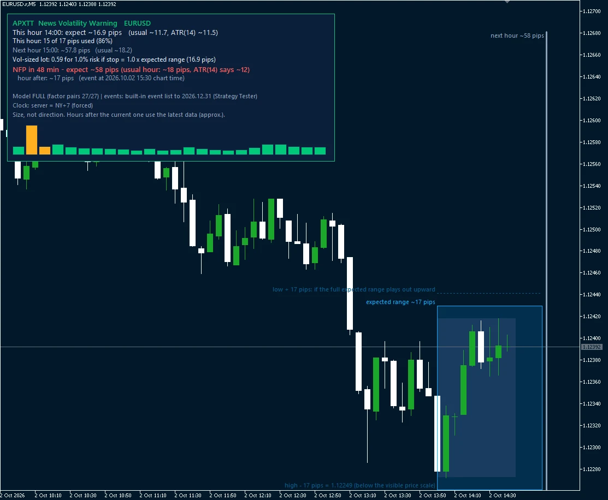
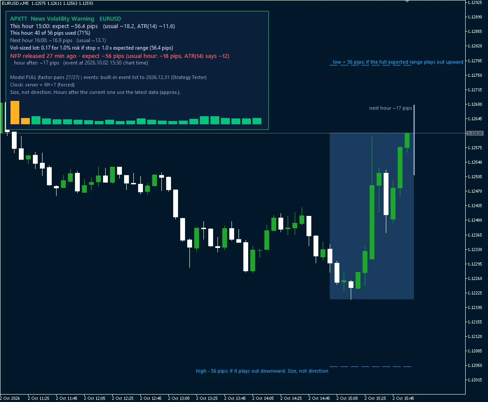
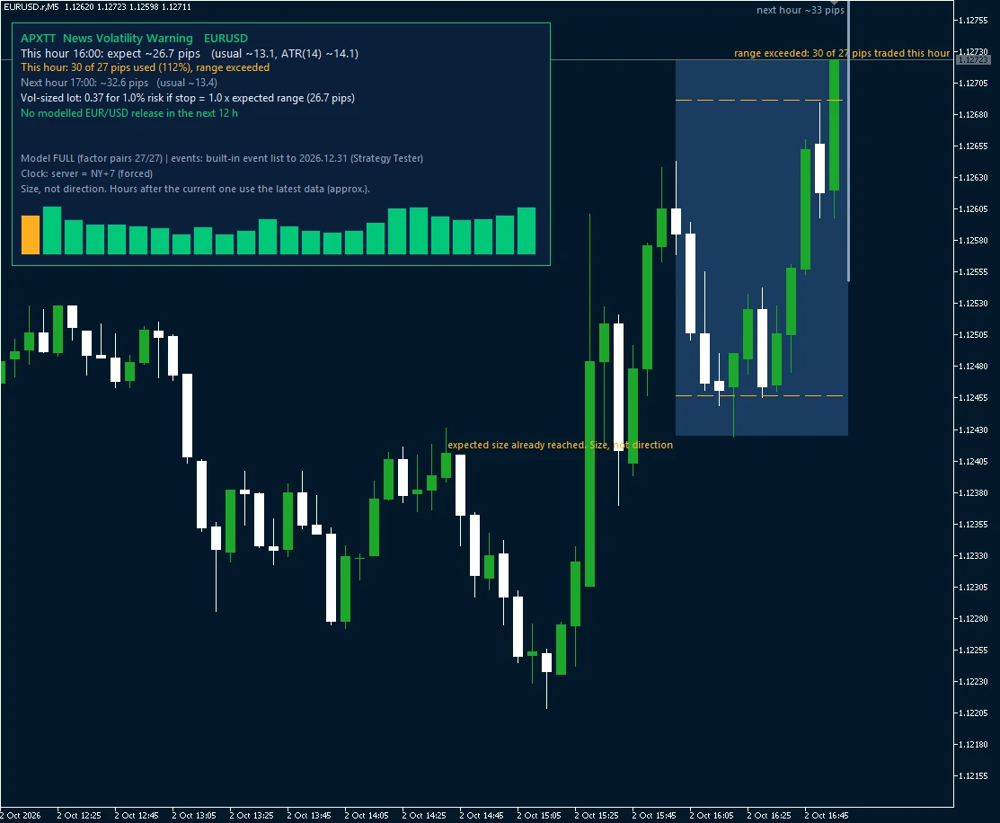

Available now · MetaTrader 5 indicator
ATR said ~12 pips.
NFP moved 43.
The News Volatility Warning forecasts how big the next hour's range will be, in pips, and warns you before scheduled releases: NFP, CPI, FOMC and central-bank decisions. So your stop and lot size fit the hour you are actually trading.
Size, not direction · next hour only · v1.02 · public live log since 19 Oct 2026 (provisional)

APXTT News Volatility Warning EURUSD
This hour 10:00: expect ~18.6 pips (usual ~12.4, ATR(14) ~11.3)
This hour: 2 of 19 pips used (12%)
Next hour 11:00: ~15.1 pips (usual ~12.3)
NFP in 5h 30m - expect ~53 pips (usual hour: ~18 pips, ATR(14) says ~11)
hour after: ~16 pips (event at 2026.10.02 15:30 chart time)
Model FULL (factor pairs 27/27) | events: event file (ends 2026-12)
Clock: server = NY+7 (forced)
Size, not direction. Prototype. Hours after the current one use the latest data (approx.).
The same hour in MetaTrader 5: a Strategy Tester replay of the indicator on real data (screen recording, no sound).
What you see on your chart
Three moments of the same US jobs report (NFP), in MetaTrader 5's Strategy Tester: a replay of 2 Oct 2026 on real data, not a live chart and not a performance record. The panel shows how much of this hour's expected range has been used and a lot size scaled to it. On the chart, the blue band is the expected range, centred on the middle of what has traded this hour and moving with it; the faint lines are the hour's low + the expected range and the hour's high − the expected range; the grey bar on the right is the next hour's expected size.






Replay of 2 Oct 2026, tester (MT5 Strategy Tester, real EURUSD minute data). Size, not direction. Back-tested on one broker's data; your broker's ranges may differ.
How we test it
Most indicators are sold on a backtest fitted to the same data it is shown on. We do the opposite: the model was fitted on 2018–2023 and scored on 2024–2026 data it never saw, and it is always compared with the free tools you already have.
| EURUSD, release hour | APXTT error | Same-hour average | ATR(14) |
|---|---|---|---|
| NFP (30 releases) | 27 pips | 41 pips | 51 pips |
| FOMC (21 decisions) | 24 pips | about 45 pips | |
Across 28 pairs, in the hour of a release for the pair's own currency, its range forecast missed by about a third as much as the best free tool and a fifth as much as ATR. ATR systematically under-calls release hours by a factor of 2–3. On ordinary hours the gain is small (4.35 vs 5.08 pips error on a 14-pip average hour).
Technical details (for the quants)
- Model: HAR-type regression on log hourly realized volatility (daily / weekly / monthly lags), with a continuous-vs-jump split (HAR-CJ), an intraday seasonality profile on the broker clock, a cross-pair market volatility factor (27 G8 pairs), and dummies for 12 scheduled macro events.
- Out-of-sample R² = 0.665 on log hourly realized volatility (median of 28 G8 pairs), fitted 2018-06..2023-12, scored 2024-01..2026-08. Most of it comes from HAR persistence; the events matter most around releases.
- Next-hour high-low range (median of 28 pairs, 16,151 hours each): MSE on log range 0.157 vs 0.204 for the best free baseline (same-hour 20-day average) and 0.242 for ATR(14); QLIKE 0.471 vs 0.666 / 0.842.
- Diebold-Mariano (HAC): significantly better than the best free baseline in 28/28 pairs on MSE (pooled t = 25.0) and 26/28 on QLIKE, never significantly worse. A later 9-week window confirmed the ranking (25/28 pairs on MSE).
- Release hours: MSE ratio 0.35 vs the best free baseline and 0.20 vs ATR(14).
- Known limits: no edge on the next-day range (ties ATR(14) D1); one broker's feed; later hours in the histogram are approximations, only the current hour is measured.
What it does not do
- It forecasts the size of the move, never its direction. It is not a signal.
- Next hour only. It is no better than ATR for tomorrow's range, so we do not claim that.
- Back-tested on one broker's data; your broker's ranges may differ. Past accuracy does not guarantee future accuracy.
- Prototype. The public live track record starts on 19 October 2026 (below); until it has run for a while, every number above is from back-data. Not financial advice.
Live track record
Back-tests can be tuned after the fact. A live log cannot. From Monday 19 October 2026, every hour, a public script commits the forecast for the next hour on 7 major pairs to GitHub before the hour starts, next to the two free yardsticks (ATR(14) and the 20-day same-hour average). After the hour, the actual range is added and scored. The rules were fixed and published in advance, and the results are published whatever they show.
Next big tests (times UTC)
| Date | Event | Hour scored |
|---|---|---|
| Wed 28 Oct | Bank of Canada | 13:00-14:00 |
| Wed 28 Oct | Fed (FOMC) | 18:00-19:00 |
| Thu 29 Oct | ECB | 13:00-14:00 |
| Fri 30 Oct | Bank of Japan (time varies) | night, ~02:00-04:00 |
| Fri 6 Nov | US jobs report (NFP) | 13:00-14:00 |
| Tue 10 Nov | US CPI | 13:00-14:00 |
Each forecast is committed during the hour before (at :15, :35 or :50). Check the log's commit time yourself, then come back after the hour for the result. We post every one of these, hits and misses.
Loading the live scoreboard…
| Scored | APXTT | Same-hour average | ATR(14) |
|---|
Last 24 forecasts
| Hour (UTC) | APXTT | Same-hour | ATR(14) | Actual |
|---|
Rows marked "not scored" had no on-time receipt and are excluded by the preregistered rules; hours with no forecast at all are listed in the log's AMENDMENTS. Data: Dukascopy BID prices. Error = average absolute miss of the hour's high-low range, in pips; lower is better. Release hours = the hour of a scheduled release for one of the pair's two currencies. Code and full log · The rules (preregistration) · Raw scoreboard
Get it
MT5 indicator (.ex5) for 7 USD majors, $19 early-access price. Free updates of the event list and model.
Meanwhile: our automated Excel trading journal.